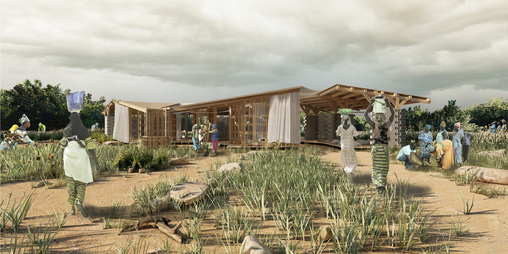
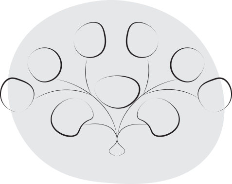
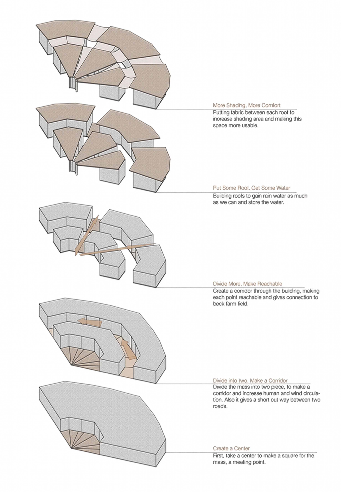
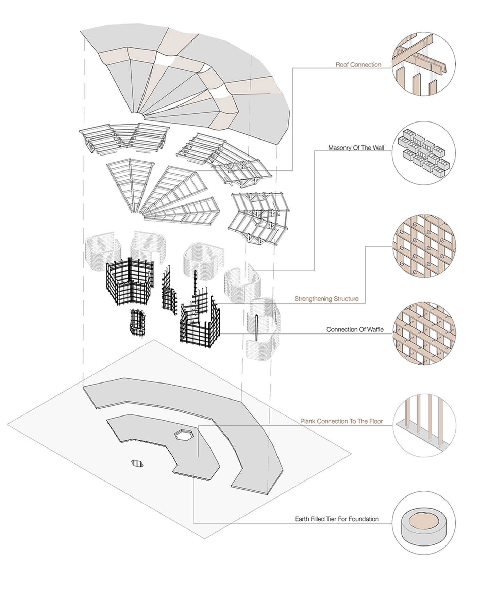
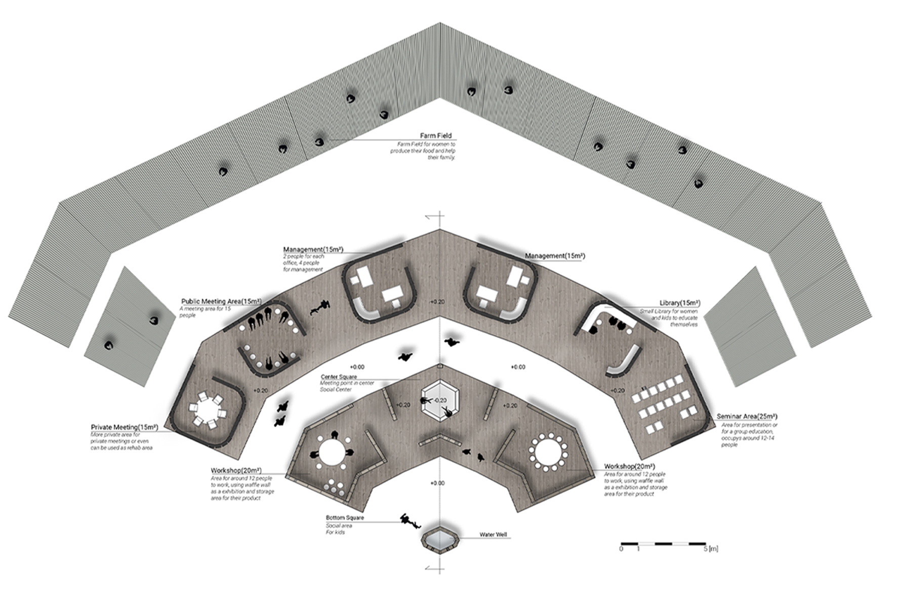
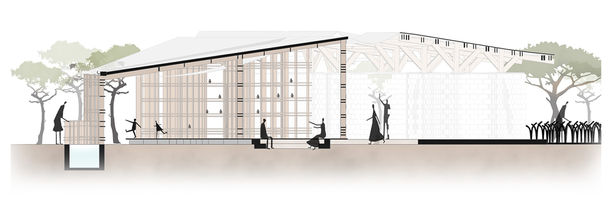

Women’s Circle aims to bring women and their children together and serve as a community education and relief space. In Senegal Baghere, the women works hard to grow children and gain their life for their family. After a hard work day, they need a place where they can come together and join the community to discuss the topic of the day and the further issues about the village, they may give decision, give support to each other and share different ideas and then organise for bigger problems. Whenever they come together, they get stronger.

01. SITE & CONTEXT
By the light of these inputs, we aimed to create an open welcoming space where women come across with others, bring their children and commend to the caretakers through the day when they are on work, and also which offer a farmer job for those who may want to work as a farmer on the agriculture region of the site. Women can learn to make handcrafts here, and after the production step, the place serves as an exhibition and selling space for their final works. For this exhibition space we used porous facades and make the people connect and see each other when they joined one of the activities inside.

02. MASSING STRATEGY
In order to make a community in here, we decided to make this place as sociable as it can be, therefore we divided into modules to increase circulation and social areas.

03. STRUCTURAL SYSTEM
The Kaira Looro project is a study in resourcefulness, designed specifically for a limited budget and restricted material access. The construction begins with a foundation of earth-filled tires used to level the site and create a stable, extruded platform. The architectural language is defined by two primary materials: timber and masonry.
A timber waffle construction system forms the structural heart of the building, serving as a dynamic exhibition and showcase wall. This system allows the facade to evolve over time, as the objects created and displayed by the community define the building’s exterior appearance. In contrast, the masonry walls are utilized for private zones, providing a closed and secure environment for more intimate functions.

